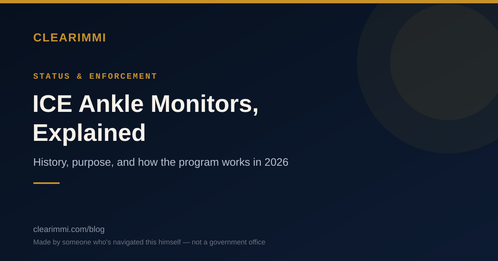

Made by someone who's navigated this himself — not a government office

As of 2026, more people are being monitored electronically by ICE than are held in physical detention. Here's where the program came from, why it exists, who wore the devices first, and how it works today.
Kòm nan 2026, gen plis moun ICE ap siveye elektwonikman pase moun ki nan detansyon fizik. Men kote pwogram nan soti, poukisa li egziste, ki moun ki te pote aparèy yo an premye, ak kijan li fonksyone jodi a.
Para 2026, más personas están siendo monitoreadas electrónicamente por ICE que las que están detenidas físicamente. Aquí está de dónde vino el programa, por qué existe, quién usó los dispositivos primero y cómo funciona hoy.
ATD stands for Alternatives to Detention — ICE's umbrella term for supervising people who are in immigration proceedings without holding them in a detention facility. The idea, at least on paper, is that instead of jailing someone while their case moves through immigration court, ICE can track and check in on them in the community.
The main ATD program is called ISAP — the Intensive Supervision Appearance Program. ISAP uses three tools:
ICE piloted the program in 2004 — the same year ICE itself was created as part of the post-9/11 reorganization that formed the Department of Homeland Security. The pilot launched in eight cities — Baltimore, Philadelphia, Miami, St. Paul, Denver, Kansas City, San Francisco, and Portland, Oregon — with up to 200 participants enrolled in each city, tracked through a mix of ankle monitors, in-person visits, and home visits.
From the very beginning, the program was not run directly by ICE — it was operated under contract by Behavioral Interventions, Inc., which later became BI Incorporated, a wholly-owned subsidiary of The GEO Group, one of the largest private prison operators in the country. That contractor relationship has continued, largely unbroken, for over two decades.
Congress has appropriated dedicated funding for ATD since fiscal year 2004. The core justification then — and now — was cost and capacity: detaining someone in a facility costs far more per day than monitoring them electronically, and detention space has always been limited relative to the number of people ICE processes.
The earliest ISAP pilots in 2004 were not targeted at one specific nationality or case type — they enrolled a limited group of adults already in removal proceedings across the eight pilot cities, selected by case specialists rather than by broad category. Separately, in that same year, ICE also ran its own in-house pilot called the Electronic Monitoring Device (EMD) program, which combined telephonic check-ins with home curfews enforced by radio-frequency monitoring — a distinct, ICE-operated effort running alongside the contractor-operated ISAP pilot. In 2008, ICE folded ISAP, EMD, and a third program together into a single, expanded alternatives-to-detention program known as ISAP II.
The population using ankle monitors shifted significantly over the following decade. By the mid-2010s, ankle monitors became closely associated with families and asylum seekers — especially following the 2014 surge of Central American families arriving at the southern border. Immigration advocates at the time argued that ankle monitors were being applied to people — asylum-seeking mothers with children, for example — who had every incentive to show up for their court hearings and posed little to no flight risk. One frequently cited example: a mother made to wear a monitor asking, "Where do they think I'm going to flee to? I have nowhere to go?"
In response to criticism over monitoring families, ICE piloted the Family Case Management Program (FCMP) from January 2016 to June 2017 — a community-based, non-electronic model that paired families with case managers instead of ankle monitors. It reported very strong compliance — roughly 99% for ICE check-ins and appointments, and close to 100% for court hearing attendance — but the program was discontinued in June 2017 under the incoming Trump administration, with ICE citing higher costs relative to ISAP and a lower removal rate among participants. Enrollment shifted back toward electronic monitoring afterward.
| Date | ATD enrollment | Context |
|---|---|---|
| 2004 | A few hundred (pilot) | 8-city ISAP pilot begins |
| 2015 | ~53,000 | Per GAO's 2022 report on ATD program growth |
| Dec 2020 | ~86,500 | Per TRAC (Syracuse University) |
| 2020 (year) | ~111,000 | Per GAO's 2022 report |
| Dec 2021 | ~157,000 | Per TRAC |
| Sept 2022 | Exceeded 300,000 for the first time | Per TRAC — rapid growth under expanded Biden-era ATD policy |
| 2023 | Reportedly peaked in the mid-300,000s to ~376,000 (exact figure and date vary by source) | Highest point in the program's history |
| Oct 2024 | ~179,000 | Per DHS reporting |
| Jul 2026 | ~183,000 | Per TRAC, most current available figure |
A note on these numbers: ICE does not publish one clean, continuous time series, so figures above come from a mix of GAO reports and TRAC's published snapshots, which don't always use the same measurement date or methodology. Treat this as the best available approximation of the trend, not an exact month-by-month count.
GPS ankle monitors specifically have followed their own trajectory within that total. Ankle-monitor enrollment sat around 24,000 in mid-2025, then climbed past 40,000 by January 2026 and past 42,000 by February 2026, following a June 2025 internal ICE memo directing officers to place GPS ankle monitors on ATD enrollees more broadly rather than relying on SmartLINK or phone check-ins. That's roughly a doubling in under a year, and reporting through mid-2026 describes it as the highest level of GPS ankle-monitor use in the program's recorded history — even though total ATD enrollment (which also includes SmartLINK and phone check-ins) remains well below its 2023 peak.
According to ICE's own published criteria, ATD-ISAP is available to adults (18+) who have been released from DHS custody and are generally either in active removal proceedings or subject to a final order of removal. Officers weigh several factors before enrollment — the current stage of someone's case, flight risk, and other individualized factors are all considered, and ICE emphasizes that enrollment decisions are made case by case rather than automatically.
The evidence on court-appearance compliance is genuinely strong. A 2014 Government Accountability Office report (GAO-15-26) found that over 95% of people on "full-service" alternatives to detention appeared for their final hearings, based on fiscal year 2011–2013 data. Other community-based (non-electronic) pilot programs — run by groups like Lutheran Immigration and Refugee Service, and the FCMP itself — have reported comparably high appearance rates without any electronic monitoring at all, relying instead on case management, legal access, and stable housing.
That last point is central to the ongoing debate: advocates argue the electronic monitoring itself may not be what's driving compliance. Programs built around case management and legal support have matched or exceeded the compliance rates of GPS-monitored programs — at a fraction of the psychological cost, and often at lower expense.
ATD started in 2004 as a small, contractor-run pilot meant to reduce reliance on costly detention space. Two decades later, it has grown into one of the largest ongoing surveillance programs in the U.S. immigration system — roughly 180,000 people currently monitored, tens of thousands of them via GPS ankle monitor and climbing, run continuously by the same corporate lineage since its first year. The programs with the strongest compliance track records historically have been the ones that relied least on electronic monitoring and most on case management and legal access — a tension that remains at the center of the debate over the program's future.
If you or a family member is currently enrolled in ATD and has questions about compliance requirements, violations, or how to request removal of a monitor, this is a case-specific legal question.
Find free or low-cost accredited immigration help →
Know someone whose TPS or other status recently ended and who's unsure what happens next?
See what options may still be open →ATD vle di Altènativ Pou Detansyon (Alternatives to Detention) — tèm jeneral ICE itilize pou dekri siveyans moun ki nan pwosedi imigrasyon san yo pa kenbe yo nan yon sant detansyon. Lide a, omwens sou papye, se olye pou mete yon moun nan prizon pandan ka li ap pase nan tribinal imigrasyon, ICE ka swiv epi tcheke ak moun sa a pandan li nan kominote a.
Pwogram ATD prensipal la rele ISAP — Pwogram Sipèvizyon Entansif pou Parèt nan Tribinal (Intensive Supervision Appearance Program). ISAP itilize twa zouti:
ICE te teste pwogram nan an 2004 — menm ane ICE limenm te kreye kòm pati nan reyòganizasyon apre 11 septanm ki te fòme Depatman Sekirite Enteryè a. Pwojè pilòt la te kòmanse nan uit vil — Baltimore, Filadèlfi, Miami, St. Paul, Denver, Kansas City, San Francisco, ak Portland, Oregon — ak jiska 200 patisipan enskri nan chak vil, yo t ap swiv yo ak yon melanj braslè cheviy, vizit an pèsòn, ak vizit lakay yo.
Depi nan kòmansman, pwogram nan pa t dirije dirèkteman pa ICE — se te yon konpayi prive, Behavioral Interventions, Inc., ki te vin BI Incorporated pita, yon filyal ki apatyen 100% a The GEO Group, youn nan pi gwo operatè prizon prive nan peyi a, ki te opere l sou kontra. Relasyon kontra sa a kontinye, prèske san enteripsyon, pandan plis pase de deseni.
Kongrè a te bay finansman dedye pou ATD depi ane fiskal 2004. Jistifikasyon prensipal la lè sa a — ak jodi a tou — se te pri ak kapasite: kenbe yon moun nan yon etablisman koute pi chè pase siveye li elektwonikman, epi espas detansyon toujou limite parapò ak kantite moun ICE trete.
Premye pwojè pilòt ISAP yo an 2004 pa t vize yon nasyonalite oswa yon kalite ka an patikilye — yo te enskri yon ti gwoup adilt ki te deja nan pwosedi depòtasyon nan uit vil pilòt yo, chwazi pa espesyalis ka olye de kategori laj. Separeman, menm ane sa a, ICE te tou fè pwòp pwojè pilòt li a rele pwogram Aparèy Siveyans Elektwonik (Electronic Monitoring Device, EMD), ki te konbine tcheke telefonik ak kouvrefe lakay ki te aplike ak siveyans radyo-frekans — yon efò separe, ICE te dirije li dirèkteman, ki t ap fonksyone anlè menm tan ak pwojè pilòt ISAP kontra a. An 2008, ICE te konbine ISAP, EMD, ak yon twazyèm pwogram ansanm nan yon sèl pwogram altènativ pou detansyon pi laj yo rele ISAP II.
Popilasyon ki t ap pote braslè cheviy yo te chanje anpil pandan deseni ki vin apre a. Nan mitan ane 2010 yo, braslè cheviy te vin trè asosye ak fanmi ak moun k ap chèche azil — espesyalman apre gwo vag fanmi Amerik Santral yo ki te rive nan fwontyè sid la an 2014. Defansè imigrasyon nan epòk sa a te diskite braslè cheviy yo t ap aplike sou moun — manman k ap chèche azil ak timoun, pa egzanp — ki te gen tout rezon pou parèt nan odyans tribinal yo epi ki pa t reprezante okenn risk pou sove. Yon egzanp yo souvan site: yon manman ki te oblije mete yon braslè k ap mande, "Kote yo panse mwen prale sove? Mwen pa gen kote pou m ale?"
An repons ak kritik sou siveyans fanmi yo, ICE te teste Pwogram Jesyon Ka Fanmi an (Family Case Management Program, FCMP) soti Janvye 2016 rive Jen 2017 — yon modèl kominotè, san elektwonik, ki te mete fanmi yo ansanm ak jesyonè ka olye de braslè cheviy. Li te rapòte konfòmite trè fò — anviwon 99% pou tcheke ak randevou ICE, epi tou prèske 100% pou parèt nan odyans tribinal — men pwogram nan te sispann an Jen 2017 anba administrasyon Trump ki t ap antre a, ICE te site depans ki pi wo konpare ak ISAP ak yon to depòtasyon ki pi ba pami patisipan yo. Enskripsyon te retounen vè siveyans elektwonik apre sa.
| Dat | Enskripsyon ATD | Kontèks |
|---|---|---|
| 2004 | Yon kèk santèn (pwojè pilòt) | Pwojè pilòt ISAP nan uit vil kòmanse |
| 2015 | ~53,000 | Selon rapò GAO 2022 sou kwasans pwogram ATD la |
| Des 2020 | ~86,500 | Selon TRAC (Syracuse University) |
| 2020 (ane) | ~111,000 | Selon rapò GAO 2022 la |
| Des 2021 | ~157,000 | Selon TRAC |
| Sept 2022 | Depase 300,000 pou premye fwa | Selon TRAC — kwasans rapid anba politik ATD ki elaji anba Biden |
| 2023 | Rapòte li te rive nan pik nan mitan 300,000 yo rive ~376,000 (chif egzat ak dat varye selon sous) | Pi wo pwen nan istwa pwogram nan |
| Oct 2024 | ~179,000 | Selon rapò DHS |
| Jiy 2026 | ~183,000 | Selon TRAC, chif ki pi resan ki disponib |
Yon nòt sou chif sa yo: ICE pa pibliye yon sèl seri done kontinyèl, kidonk chif yo pi wo a soti nan yon melanj rapò GAO ak enstantane TRAC pibliye, ki pa toujou itilize menm dat mezi oswa menm metodoloji. Konsidere sa a kòm pi bon apwoksimasyon disponib pou tandans lan, se pa yon konte egzat mwa pa mwa.
Braslè cheviy GPS an patikilye te swiv pwòp tandans pa yo anndan total sa a. Enskripsyon braslè cheviy te anviwon 24,000 nan mitan 2025, apre sa li te monte pase 40,000 nan Janvye 2026 ak pase 42,000 nan Fevriye 2026, apre yon memo entèn ICE an Jen 2025 ki te enstwi ofisye yo pou mete braslè cheviy GPS sou moun ki enskri nan ATD pi lajman olye pou yo konte sou SmartLINK oswa tcheke telefonik. Sa se anviwon doub nan mwens pase yon ane, epi rapò jiska mitan 2026 dekri li kòm pi wo nivo itilizasyon braslè cheviy GPS nan istwa pwogram nan — menm si total enskripsyon ATD (ki gen ladan tou SmartLINK ak tcheke telefonik) rete byen anba pik li an 2023 la.
Selon kritè ICE limenm pibliye, ATD-ISAP disponib pou adilt (18 an oswa plis) ki te libere nan gadyanaj DHS epi ki jeneralman swa nan pwosedi depòtasyon aktif oswa ki soumèt a yon lòd final depòtasyon. Ofisye yo evalye plizyè faktè anvan enskripsyon — etap aktyèl ka moun nan, risk pou sove, ak lòt faktè endividyèl yo tout pran an kont, epi ICE mete aksan sou fè desizyon enskripsyon yo pran ka pa ka olye de otomatikman.
Prèv sou konfòmite parèt nan tribinal la solid tout bon. Yon rapò 2014 Biwo Kontabilite Gouvènman an (Government Accountability Office, GAO-15-26) te jwenn ke plis pase 95% moun ki nan altènativ "sèvis konplè" pou detansyon te parèt nan denye odyans yo, ki baze sou done ane fiskal 2011–2013. Lòt pwogram pilòt kominotè (san elektwonik) — dirije pa gwoup tankou Lutheran Immigration and Refugee Service, ak FCMP limenm — te rapòte to parèt konparab wo san okenn siveyans elektwonik ditou, konte sou jesyon ka, aksè legal, ak lojman estab olye de sa.
Pwen sa a santral nan deba k ap kontinye a: defansè yo diskite siveyans elektwonik limenm ka pa sa k ap kondwi konfòmite a. Pwogram ki bati sou jesyon ka ak sipò legal te egale oswa depase to konfòmite pwogram ki siveye ak GPS yo — ak yon fraksyon nan pri sikolojik la, epi souvan a yon pri ki pi ba.
ATD te kòmanse an 2004 kòm yon ti pwojè pilòt kontra ki te gen objektif diminye depandans sou espas detansyon ki koute chè. Apre de deseni, li vin youn nan pi gwo pwogram siveyans k ap kontinye nan sistèm imigrasyon Ozetazini — apeprè 180,000 moun ki siveye kounye a, plizyè dizèn milye pami yo ak braslè cheviy GPS epi k ap ogmante toujou, dirije san rete pa menm lign konpayi a depi premye ane li. Pwogram ki gen pi bon rezilta konfòmite istorikman se te sa ki te depann pi mwens sou siveyans elektwonik ak plis sou jesyon ka ak aksè legal — yon tansyon ki rete nan sant deba sou avni pwogram nan.
Si w oswa yon manm fanmi w kounye a enskri nan ATD epi w gen kesyon sou egzijans konfòmite, vyolasyon, oswa kijan pou mande retire yon braslè, sa se yon kesyon legal ki spesifik a ka ou.
Jwenn èd imigrasyon gratis oswa a ba pri →
Konnen yon moun ki estati TPS oswa lòt estati te fèk fini epi ki pa sèten sa k ap vin apre?
Gade ki opsyon ki ka toujou disponib →ATD significa Alternativas a la Detención (Alternatives to Detention) — el término general que usa ICE para supervisar a personas en procesos de inmigración sin mantenerlas en un centro de detención. La idea, al menos en teoría, es que en lugar de encarcelar a alguien mientras su caso avanza en la corte de inmigración, ICE puede rastrear y monitorear a esa persona en la comunidad.
El programa principal de ATD se llama ISAP — Programa Intensivo de Supervisión y Comparecencia (Intensive Supervision Appearance Program). ISAP utiliza tres herramientas:
ICE puso a prueba el programa en 2004 — el mismo año en que se creó ICE como parte de la reorganización posterior al 11 de septiembre que formó el Departamento de Seguridad Nacional (DHS). El proyecto piloto se lanzó en ocho ciudades — Baltimore, Filadelfia, Miami, St. Paul, Denver, Kansas City, San Francisco y Portland, Oregón — con hasta 200 participantes inscritos en cada ciudad, monitoreados mediante una combinación de monitores de tobillo, visitas en persona y visitas domiciliarias.
Desde el principio, el programa no fue operado directamente por ICE — fue operado bajo contrato por Behavioral Interventions, Inc., que más tarde se convirtió en BI Incorporated, una subsidiaria de propiedad total de The GEO Group, uno de los mayores operadores de prisiones privadas del país. Esa relación contractual ha continuado, casi sin interrupción, por más de dos décadas.
El Congreso ha destinado fondos específicos para ATD desde el año fiscal 2004. La justificación principal entonces — y ahora — fue el costo y la capacidad: detener a alguien en un centro cuesta mucho más por día que monitorearlo electrónicamente, y el espacio de detención siempre ha sido limitado en relación con la cantidad de personas que procesa ICE.
Los primeros pilotos de ISAP en 2004 no estaban dirigidos a una nacionalidad o tipo de caso en particular — inscribieron a un grupo limitado de adultos ya en proceso de deportación en las ocho ciudades piloto, seleccionados por especialistas de caso en lugar de por categoría amplia. Por separado, ese mismo año, ICE también dirigió su propio proyecto piloto interno llamado programa de Dispositivo de Monitoreo Electrónico (Electronic Monitoring Device, EMD), que combinaba reportes telefónicos con toques de queda domiciliarios reforzados por monitoreo de radiofrecuencia — un esfuerzo distinto, operado directamente por ICE, que funcionaba junto al piloto ISAP operado por el contratista. En 2008, ICE combinó ISAP, EMD y un tercer programa en un único programa ampliado de alternativas a la detención conocido como ISAP II.
La población que usaba monitores de tobillo cambió significativamente en la década siguiente. Para mediados de la década de 2010, los monitores de tobillo se asociaron estrechamente con familias y solicitantes de asilo — especialmente después de la oleada de 2014 de familias centroamericanas que llegaron a la frontera sur. Los defensores de inmigrantes de esa época argumentaron que los monitores de tobillo se estaban aplicando a personas — madres solicitantes de asilo con niños, por ejemplo — que tenían todos los incentivos para presentarse a sus audiencias judiciales y representaban poco o ningún riesgo de fuga. Un ejemplo citado con frecuencia: una madre obligada a usar un monitor preguntando: "¿A dónde creen que voy a huir? No tengo a dónde ir."
En respuesta a las críticas por monitorear a familias, ICE puso a prueba el Programa de Manejo de Casos Familiares (Family Case Management Program, FCMP) desde enero de 2016 hasta junio de 2017 — un modelo comunitario, no electrónico, que emparejaba a las familias con gestores de casos en lugar de monitores de tobillo. Reportó un cumplimiento muy alto — aproximadamente 99% en reportes y citas con ICE, y cerca del 100% en asistencia a audiencias judiciales — pero el programa fue descontinuado en junio de 2017 bajo la administración entrante de Trump, con ICE citando costos más altos en comparación con ISAP y una tasa de deportación más baja entre los participantes. La inscripción volvió al monitoreo electrónico después de eso.
| Fecha | Inscripción en ATD | Contexto |
|---|---|---|
| 2004 | Unos cientos (piloto) | Comienza el piloto de ISAP en 8 ciudades |
| 2015 | ~53,000 | Según el informe de la GAO de 2022 |
| Dic 2020 | ~86,500 | Según TRAC (Universidad de Syracuse) |
| 2020 (año) | ~111,000 | Según el informe de la GAO de 2022 |
| Dic 2021 | ~157,000 | Según TRAC |
| Sept 2022 | Superó las 300,000 por primera vez | Según TRAC — crecimiento rápido bajo la política ampliada de ATD de la era Biden |
| 2023 | Reportado un pico entre los 300,000 altos y ~376,000 (la cifra exacta y la fecha varían según la fuente) | El punto más alto en la historia del programa |
| Oct 2024 | ~179,000 | Según informes del DHS |
| Jul 2026 | ~183,000 | Según TRAC, la cifra más reciente disponible |
Una nota sobre estas cifras: ICE no publica una sola serie de datos continua, así que las cifras anteriores provienen de una combinación de informes de la GAO y capturas publicadas por TRAC, que no siempre usan la misma fecha de medición o metodología. Considere esto como la mejor aproximación disponible de la tendencia, no un conteo exacto mes a mes.
Los monitores de tobillo GPS específicamente han seguido su propia trayectoria dentro de ese total. La inscripción en monitores de tobillo se situaba alrededor de 24,000 a mediados de 2025, luego superó los 40,000 en enero de 2026 y los 42,000 en febrero de 2026, tras un memorando interno de ICE de junio de 2025 que instruyó a los oficiales a colocar monitores de tobillo GPS a los inscritos en ATD de forma más amplia, en lugar de depender de SmartLINK o reportes telefónicos. Eso es aproximadamente el doble en menos de un año, y los informes hasta mediados de 2026 lo describen como el nivel más alto de uso de monitores de tobillo GPS en la historia registrada del programa — aunque la inscripción total en ATD (que también incluye SmartLINK y reportes telefónicos) permanece muy por debajo de su pico de 2023.
Según los criterios propios publicados por ICE, ATD-ISAP está disponible para adultos (18 años o más) que hayan sido liberados de la custodia del DHS y que generalmente estén en proceso activo de deportación o sujetos a una orden final de deportación. Los oficiales consideran varios factores antes de la inscripción — la etapa actual del caso de la persona, el riesgo de fuga y otros factores individuales se toman en cuenta, e ICE enfatiza que las decisiones de inscripción se toman caso por caso, no automáticamente.
La evidencia sobre el cumplimiento de comparecencias en corte es genuinamente sólida. Un informe de la Oficina de Rendición de Cuentas del Gobierno (Government Accountability Office, GAO-15-26) de 2014 encontró que más del 95% de las personas en alternativas de "servicio completo" se presentaron a sus audiencias finales, según datos de los años fiscales 2011–2013. Otros programas piloto comunitarios (no electrónicos) — dirigidos por grupos como Lutheran Immigration and Refugee Service, y el propio FCMP — reportaron tasas de comparecencia comparablemente altas sin ningún monitoreo electrónico, confiando en cambio en el manejo de casos, el acceso legal y la vivienda estable.
Ese último punto es central en el debate en curso: los defensores argumentan que el monitoreo electrónico en sí mismo podría no ser lo que impulsa el cumplimiento. Los programas basados en manejo de casos y apoyo legal han igualado o superado las tasas de cumplimiento de los programas monitoreados por GPS — a una fracción del costo psicológico, y a menudo a un costo económico menor.
ATD comenzó en 2004 como un pequeño piloto operado por un contratista, pensado para reducir la dependencia de un costoso espacio de detención. Dos décadas después, se ha convertido en uno de los programas de vigilancia continua más grandes del sistema de inmigración de EE. UU. — aproximadamente 180,000 personas monitoreadas actualmente, decenas de miles de ellas mediante monitor de tobillo GPS y en aumento, operado sin interrupción por el mismo linaje corporativo desde su primer año. Los programas con los historiales de cumplimiento más sólidos históricamente han sido los que menos dependieron del monitoreo electrónico y más del manejo de casos y el acceso legal — una tensión que sigue en el centro del debate sobre el futuro del programa.
Si usted o un familiar está actualmente inscrito en ATD y tiene preguntas sobre requisitos de cumplimiento, violaciones, o cómo solicitar la remoción de un monitor, esta es una pregunta legal específica de su caso.
Encuentre ayuda migratoria gratuita o de bajo costo →
¿Conoce a alguien cuyo TPS u otro estatus terminó recientemente y no está seguro de qué sigue?
Vea qué opciones podrían seguir abiertas →